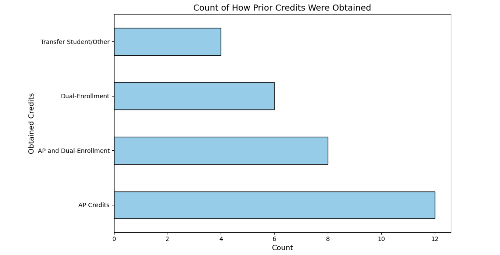
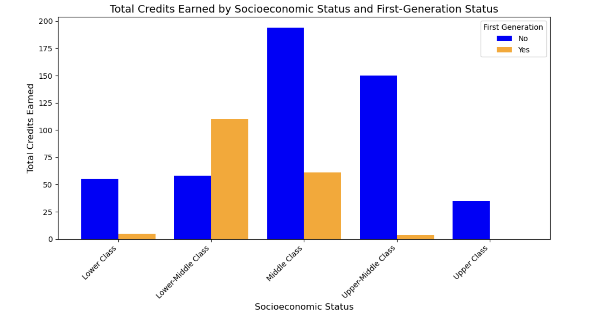
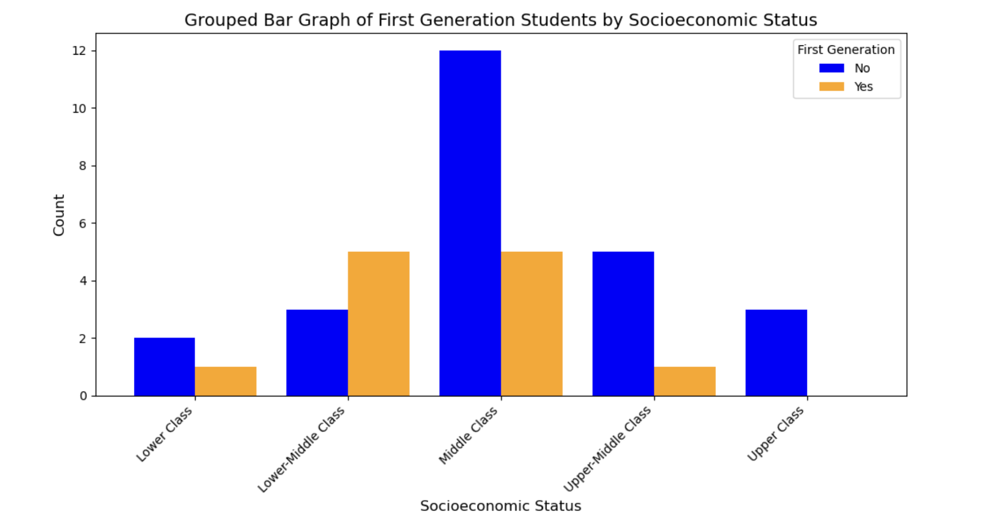
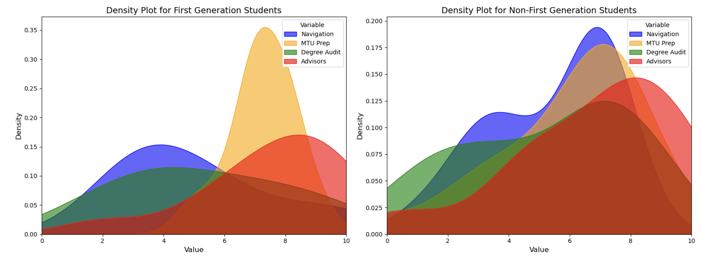
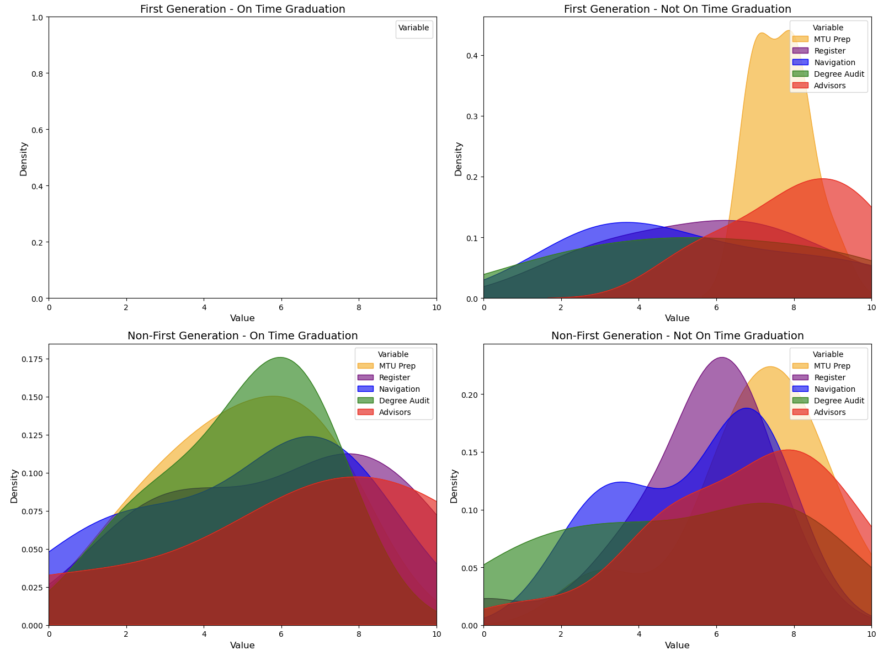

Home
Home
 Interviews
Interviews
 Survey
Survey
 Banweb
Banweb
 Sources
Sources
Data Summary and Analysis
Our weeklong survey showed us the current state of the student body concerning registration for college and classes. The majority of students identified as middle-class (n=17) and not first-generation students (n=25), while the second-largest group was mostly of lower-middle-class, first-generation students.
A big factor in the data was the significant difference in the ability to earn college credits prior to enrollment. Non-first-generation students were more likely to take advantage of opportunities such as AP courses or community college programs to earn credits before starting college. On the other hand, first-generation students often lacked similar opportunities or access to these resources or were not aware of them prior to college.
When analyzing these backgrounds, we looked at responses to questions about college preparedness, graduation timelines, and the accessibility of helpful resources. The data showed that first-generation students showed greater doubts and challenges regarding their preparedness for college, particularly at Michigan Tech, compared to their non-first-generation peers. This is concerning, because research such as Friedman’s The Prediction of College Student Academic Performance and Retention: Application of Expectancy and Goal Setting Theories (2009) states that a student’s belief in their ability to achieve their goals is one of the leading determining factors for academic success and retention. Students who doubt their preparedness prior to enrollment are at a higher risk of struggling academically or even dropping out.
However, there is some encouraging news about this problem. When asked about their confidence in graduating on time, both first-generation and non-first-generation students expressed relatively equitable levels of optimism. However, as a thing to note, we can see the confidence of individuals' ability to use the degree audit correlates to their confidence of graduating on time. While the survey's limited sample size means our findings are not definitive, it is clear that there is potential to support all students more effectively.
We had new perspectives from our survey and feedback on improving college preparedness and understanding the registration process. Nearly all students who responded suggested fixing the usability and design of the university’s Banweb application. In response, our group developed a mockup design to make the platform more user-friendly. We believe this project could play a significant role in addressing disparities in education background, helping disadvantaged students feel more prepared, and encouraging their academic success.
Attained Credits
This graph takes each of the participants who responded and shows where an individual got their credits from overall. Most credits were gained from AP credits or a combination of Dual-Enrollment and AP. These are interesting, as we will get into it with future graphs, many poorer schools are not able to get these opportunities and those students tend to be first generation students when attending college.
Total Credits Earned by Socio-economic Class
This graph shows the total amount of credits earned prior to attending Michigan Technological University. In the graph as shown, we can see that the vast majority of prior credits were earned by students who were not first generation students and in the middle class. Overall the amount of those who had earned credits while being first generation students is very low in comparison, and as stated before can put these students at a disadvantage for registration or knowledge about how college works as a total.
Count of Students by Socioeconomic Class
This graph shows the count of students who aligned themselves with a social class. In this graph, many students considered themselves a part/version of the middle class, as that is expected as we had considered the potential insecurities of answering upper or lower class, as such we delegated an extra two decisions for lower-middle and upper-middle class. Although the majority is still relegated to the middle class, it gives a better perspective of where first generation and non-first generation students are located in our data.
Confidence in Services and College Preparation
This graph analyzes the separate questions we asked about their confidence with Michigan Tech’s: navigation on their websites, degree audit, advisors, and how well they were prepared for college. Although a small dataset, we can see the difference in confidence between first generation and non-first generation students. The confidence they had going into their first semester was reletively the same across the board. However, for first-generation students the navigation and understanding of the degree audit was very negative. This indicates that they did not have parents, family members, or high school counselors help them through the process. This is furthered by the fact that first generation students had well regarded opinions of their advisors. This is likely due to first generation students being more reliant on their advisors than the non-first generation students.
Comparison Between Graduation on Time with First Generation Students
This graph analyzes the differences between the confidence responses depending on if they were first generation students and if they thought they would graduate on time. Unfortunately our survey was run for a brief amount of time so we could not get enough information for the first generation students who thought they would graduate on time. However, with the data that we did get, it was revealed that those who had a higher understanding of the degree audit had a more positive outlook on if they were going to graduate on time, as those who did not understand the degree audit thought they would not graduate on time.
Questions and Raw Data
- Did you have any prior college credits that you transferred to MTU?
- Select all options that apply regarding credits earned before starting MTU. AP Credits in high school, Dual-Enrollment in high school, Transfer Student from other college NOT paid or affiliated with a high school?
- How many credits did you transfer?
- Are you a First Generation Student?
- Which of the following best describes your economic class?
- How easy is BanWeb to navigate?
- How easy is it to register for classes on BanWeb?
- How easy is it to understand your degree audit?
- How helpful are the academic advisors?
-
What changes could make BanWeb more accessible?
Nothing
The most helpful thing would be a complete redesign of the degree audit. It's very hard to understand in its current state.
make the ui less ugly it looks so bad and its so disorganized
To fix the layout and the general way it works like how you need to keep hitting submit
Make the audits more clean with less text
I think we should make Banweb more accessible through changing the design of how we can view new classes and schedule them. Allow us to go back to the scheduling page after we scheduled one class
Hire a cs major to make the website user friendly interface
Banweb feels sketchy like a 3rd party website. Needs to be refined in terms of ui, maybe softer looking and better color coded. Fill space more effectively as well. It just feels odd navigating it.
A complete redesign
It would be nice if there was someone to show you how to use it.
There is a website that allows us to craft a schedule, notice time conflicts early, and make it easy to schedule classes. I don’t understand why something like that couldn’t be integrated into banweb before our timeslot opens up
If you could register for courses my clicking it in the search menu rather than needing the course number.
Make it easier to read and understand what the heck is going on. Also update it so it doesn't look like a website from the early 2000's
Make it look more appealing than a 20 year old program
Make the website more smooth graphically and better organize the information
Redo the design. Too many options everywhere that it makes it hard to search through them
If the website was more modern and organized.
- How prepared did you feel starting your first semester at MTU?
- Have you been concerned that you won't be able to graduate on time?
- What is the highest degree you plan to pursue at MTU?